寶可夢世界擁有漫長的歷史和與之相對的為數眾多的傳說。
在神奧傳說中，虛無之地出現了一顆蛋，並孵化出名為阿爾宙斯的寶可夢，而後阿爾宙斯建立了宇宙，並且創造出帝牙盧卡、帕路奇亞、騎拉帝納。帝牙盧卡與帕路奇亞擁有掌控時間與空間的能力，而騎拉帝納則有掌控反物質的能力，它存在於毀壞的世界之中。接著，在世界誕生之初，阿爾宙斯創造了亞克諾姆、由克希和艾姆利多，分別代表共存於現代的人類和寶可夢之中的意志、知識與感情。牠們存在於今天被稱為立志湖、睿智湖、心齊湖等湖泊的異空間裡，被稱為湖之傳說的寶可夢。寶可夢世界中出現了天冠山一類的地塊，傳說隨著雷吉奇卡斯在陸地間的移動，形成了各個地區，在天冠山周圍形成的是神奧地區。在這場造山運動中，神奧地區的東北部出現了嚴酷山，在其中的岩漿中誕生出席多藍恩。
在豐緣地區，固拉多從地底的岩漿中誕生，蓋歐卡在深海的海溝中出現，烈空坐則形成於臭氧層的物質中。烈空坐在臭氧層中盤旋，偶爾也會來到天空之柱休憩。固拉多和蓋歐卡分別擴張著大陸與海洋。兩隻超古代寶可夢終於碰面，帶來了為爭奪在寶可夢世界之初的優勢而進行的激烈戰鬥。烈空坐最終平息了這場戰鬥，並使得固拉多與蓋歐卡回到各自長眠的洞窟中。為了防止兩隻超古代寶可夢再度醒來，朱紅色寶珠與靛藍色寶珠被製造，並保管於送神山。同時，阿羅拉進入初始形成時期，但沒有光明，天邊三隻傳說中的寶可夢出現，索爾迦雷歐、露奈雅拉與奈克洛茲瑪給阿羅拉帶來了光明，隨後奈克洛茲瑪的光漸漸消失，進入沉睡之中，索爾迦雷歐與露奈雅拉也消失在了天邊。
許多年之後進入了史前時代，並出現了多種存在於那個時期的寶可夢。考古學家已證實這些寶可夢分布於各個陸地，在今天形成了化石並包含著寶可夢的遺傳基因。世界上更多地存在其它種類的寶可夢，除了寶可夢之外，寶可夢世界上還出現了人類。
在古代的神奧地區，人類與寶可夢還未生活在一起，寶可夢被認為是非常可怕的生物。但因主角的活躍和幫助，洗翠的人們逐漸和寶可夢消除誤解，相互理解和幫助，寶可夢對戰開始逐漸流行起來。
在現代，寶可夢和人類一起生存，作為訓練家的人類會捕捉寶可夢，訓練寶可夢，和寶可夢一起對戰，培育寶可夢，或者把寶可夢作為寵物，亦或作為一門研究的學科，或利用寶可夢的能力完成各種工作。許多神奧傳說也說人類與寶可夢的關係非常親近，歷史上甚至有一段不分彼此的時期。
廣義地說，寶可夢訓練本身就是基於兩個這樣的問題：訓練家和寶可夢應該有怎樣的關係，如何才能增進這種關係。因為有著不同的觀點，不同的訓練家也會有不同的訓練方式，專長於不同的領域。並沒有任何一種方式是正確的訓練方式，每一種方式都有其有利和不利的一面。
然而，許多訓練方式最終其實都分屬兩類。第一類是專注於寶可夢的感受和幸福，建立強大的友誼；第二類是專注於寶可夢的力量和能力。訓練家經常會為這兩種觀點而爭執不休，例如小智和真司在培育寶可夢變強的觀念方面經常發生衝突。在寶可夢系列的價值觀裡，則突出地強調訓練家與寶可夢之間，友情才是最重要的，而只要有愛與關心，就能發揮出任何寶可夢的強大力量。
寶可夢世界史顯然與現實世界不同，並側重於描寫人類與寶可夢相處的部分。在世界上並沒有主要的宗教，但許多信仰和神話都圍繞著傳說的寶可夢，所以也可以說，寶可夢是這個世界人類的主要信仰。而且，許多人類都對寶可夢表現出友好和尊重，世界各地也有與神話傳說相關的神殿。
然而，也有許多人希望利用寶可夢滿足自己的野心。有些人希望獲得物質的收穫，而有些人則希望達成一些不被這個世界接受的理想。另外，至少在歷史上，寶可夢世界曾有過戰爭，並且分屬不同陣營的寶可夢也曾參與其中。其實人類與寶可夢上的差距，在於擁有能力的不同——人類擁有「智慧」讓人類有著與寶可夢不同的認知，寶可夢擁有著的「力量」讓寶可夢擁有控制各種屬性和使用招式的能力。
雖然人類的生活依舊樸素自然，但寶可夢世界的科學技術比現實世界更要先進，科技的進步可以通過電腦等設備讓寶可夢存放在寶可夢寄放系統裡，把寶可夢通過全球終端發送到世界各地，將化石復原為寶可夢，將洛托姆導入手機等各種設備中實現智能化的科技，能夠傳送古代寶可夢或未來寶可夢的時光機，位於海中但是具有人工創造的各種地形的生態巨蛋，等等。能量轉換等科技成就和進化、可以記錄事件的花等奇特自然現象使得寶可夢世界和現實世界存有很大的不同。得文公司的一些研究員還在嘗試更加先進的科技想法，比如將寶可夢的夢境投影，和寶可夢直接交流，將人類變成寶可夢（正輝曾意外造成這樣的事件）等等。製造失重的機器和基本的交通方式比如自行車和卡車一同存在。
寶可夢世界最為先進和常用的技術之一是精靈球，可以把寶可夢收納到口袋中的小球裡。在對戰中，如果對手野生寶可夢的體力減弱，訓練家就會扔出精靈球。如果精靈球擊中了寶可夢並且沒有被彈開，精靈球就會張開，把寶可夢收入其中，然後關閉。接著在精靈球搖晃的期間，如果寶可夢沒有掙脫精靈球，那麼就算捕捉成功。精靈球最早來源於球果而非人工製造，近代的精靈球需要人工擰開螺絲將寶可夢放出，但洗翠地區精靈球的機能和現代的精靈球十分接近。精靈球有各種各樣，分別用於不同的用途和場合，大師球可以萬無一失的捕捉寶可夢。
儘管寶可夢世界有各種各樣的先進科技，但寶可夢訓練家更傾向於徒步旅行，尋找野生寶可夢，達成自己的夢想，可能是因為徒步比較容易遇到寶可夢，而乘坐交通工具會錯過很多野生寶可夢生活的地方，但也有可能是因為乘坐交通工具能馬上到達目的地所以沒有意思。因此通常訓練家都只會選擇僅能徒步穿越的道路旅行，很少會走在汽車行駛的公路上，也很少有訓練家駕車或長時間乘車。
通常訓練家們為了更便捷的旅行，會穿著跑步鞋，部分地區的訓練家還會穿著溜冰鞋以獲得更快和機動的移動，而有些訓練家會去拜訪自行車店，購買自行車來代替徒步，雖然也有騎乘摩托車的訓練家，但是大部分的少年訓練家都沒有到達駕駛摩托車和汽車的年齡。
除汽車外還有飛機、熱氣球或飛行船，但一樣只被用作大宗運輸或豪華享受的工具，鮮少見到訓練家乘坐這些交通工具旅行。地區之間最常見的交通方式是渡船，許多地區都有自己的航線和港口，也有些地區興建了鐵路，如城都地區和關都地區的磁浮列車以及合眾地區的對戰地下鐵。人類可以利用寶可夢來飛翔和衝浪，而寶可夢世界亦存在著潛水艇等交通工具。
動畫和漫畫中，寶可夢世界的物理規律有時會與遊戲發生衝突，比如不尋常的體力和能力，躲過致命的攻擊，或者能突破屬性相剋的原理等。
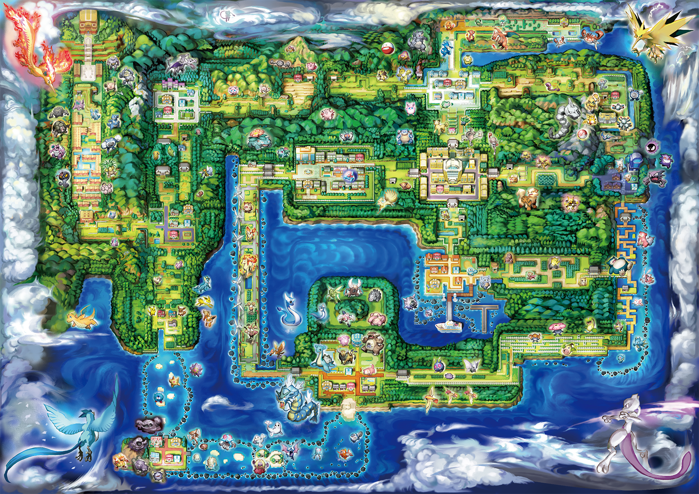
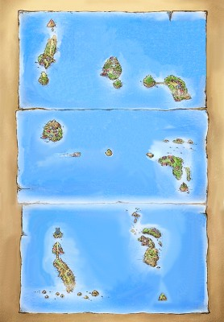
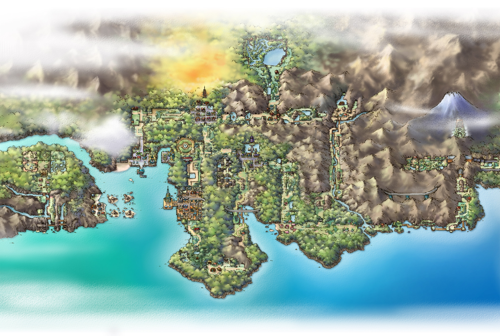
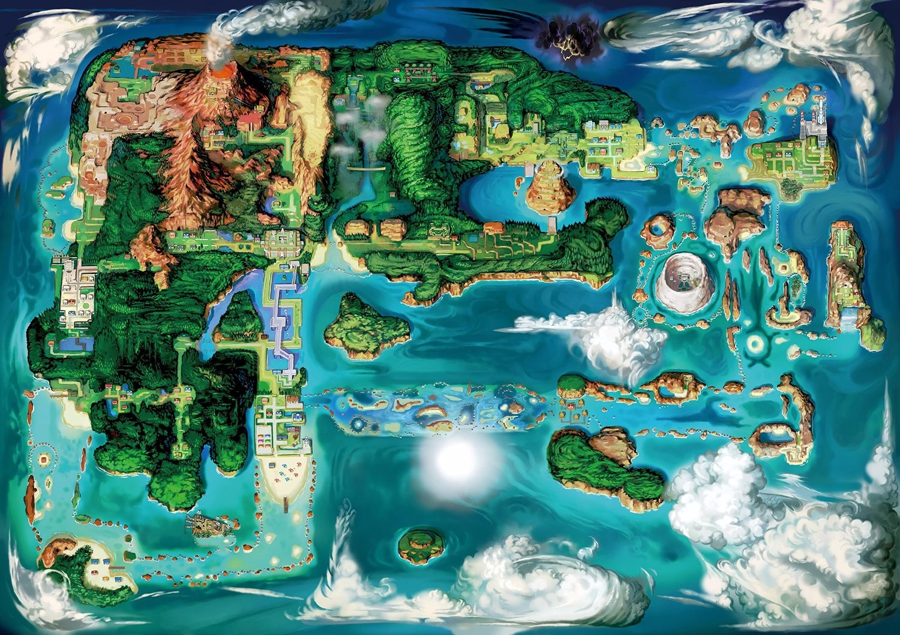
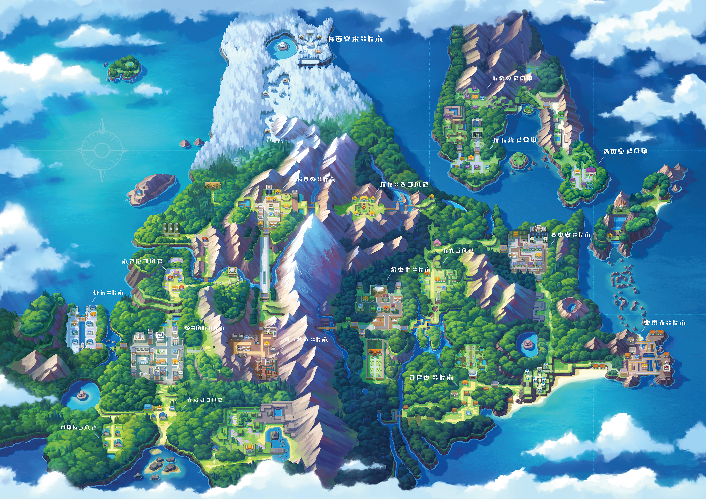
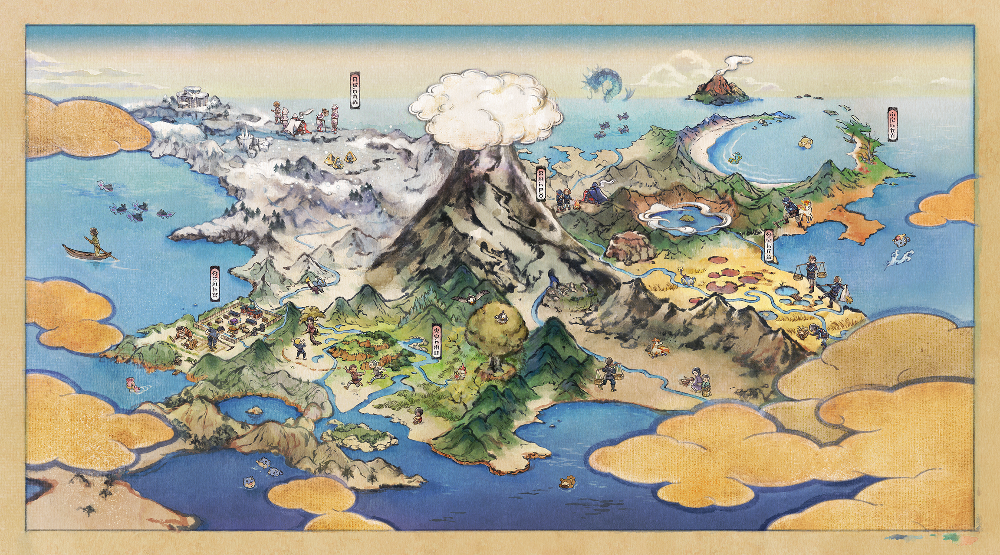
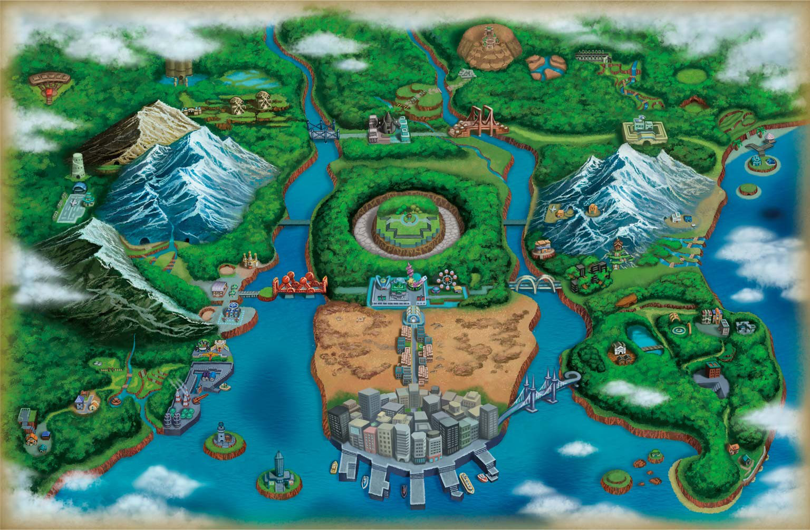
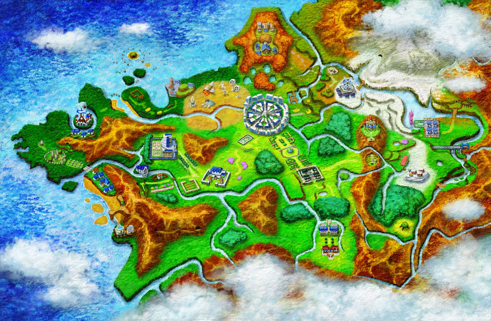
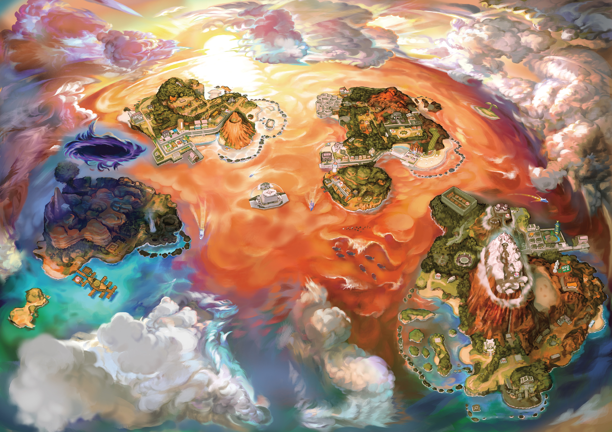
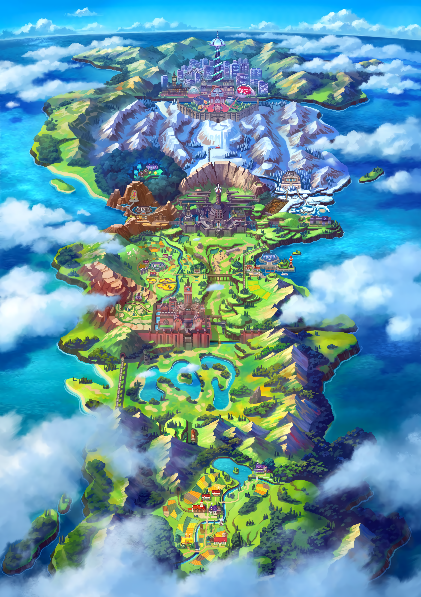
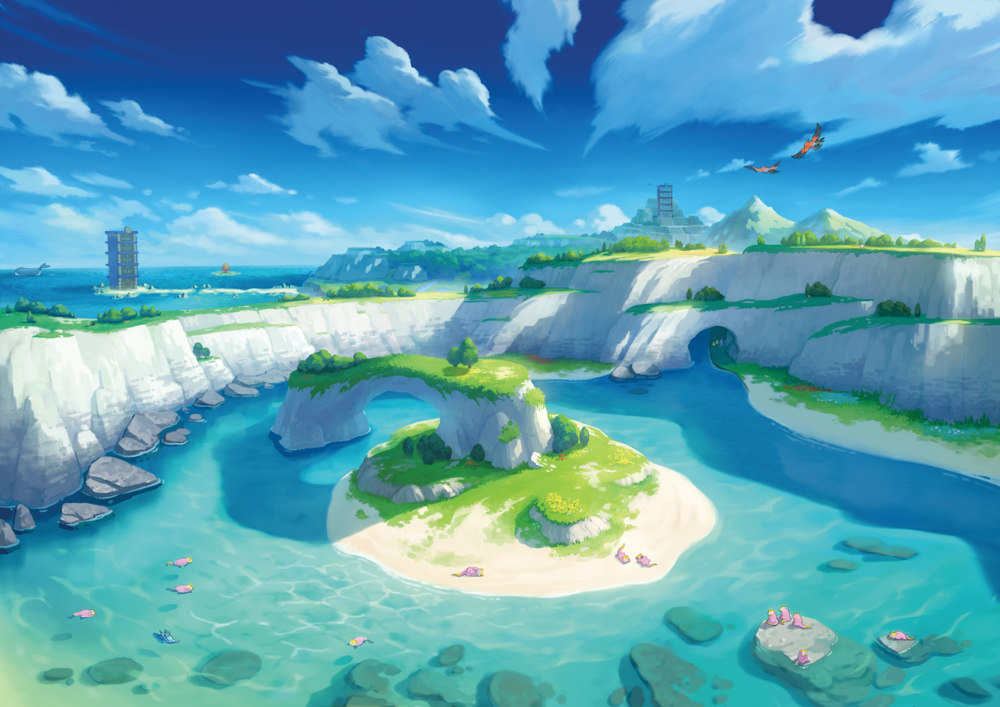
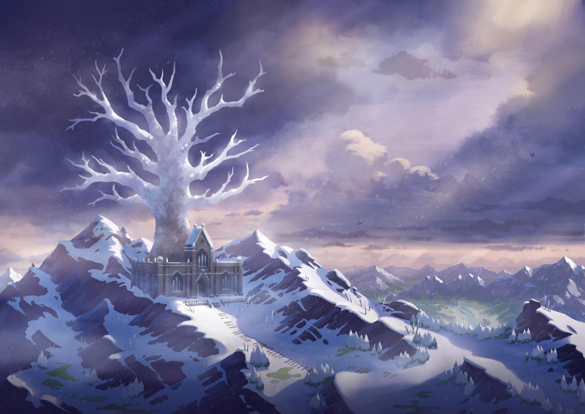
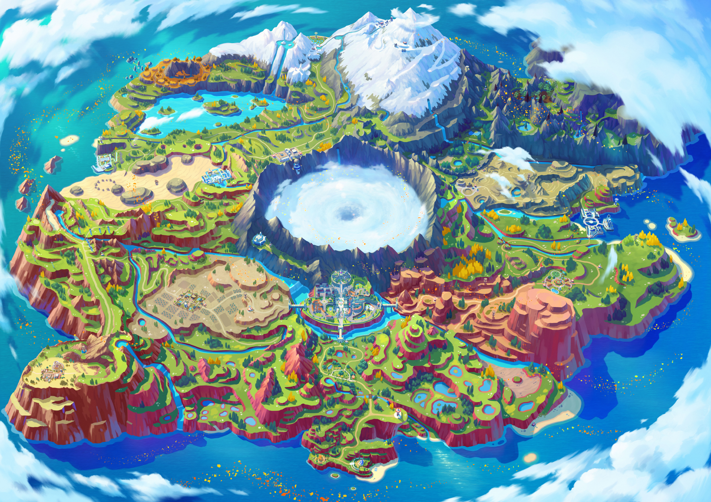